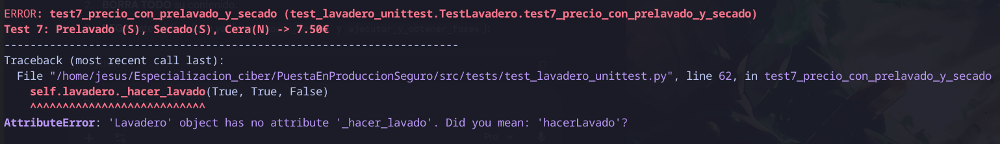
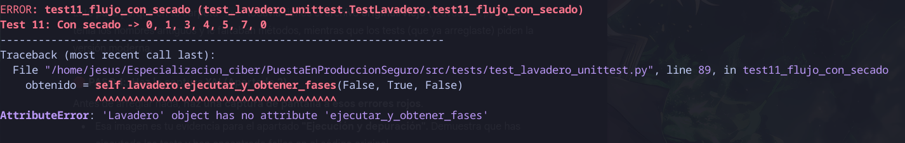
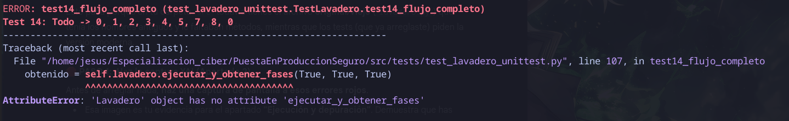

Apartado 2: Errores en el código
En este apartado se explicaran los 14 errores que habia en el código.
1. Errores de Estado y Validaciones (Tests 1–3)
Error 1: Inicialización Incorrecta (Test 1)
-
El Problema El test fallaba al verificar que un lavadero nuevo tuviera los ingresos a
0.0y las opciones desactivadas. -
La Causa El constructor
__init__original no garantizaba un estado limpio ni reseteaba las banderas aFalseal crearse el objeto. -
Solución Se modificó el constructor para inicializar explícitamente todas las variables a
Falsey0.0(o llamar internamente al métodoterminar()).
Error 2: Validación de Encerado (Test 2)
-
El Problema El sistema permitía contratar encerado sin haber pedido secado a mano, violando las reglas de negocio y sin lanzar la excepción esperada.

-
La Causa Faltaba una cláusula de guarda al inicio del método
_hacer_lavado. -
Solución Se añadió la validación:
Error 3: Lavadero Ocupado (Test 3)
-
El Problema Se podía iniciar un nuevo lavado mientras otro ya estaba en curso.

-
La Causa No se verificaba el flag
self.ocupadoantes de aceptar un coche nuevo. -
Solución Se añadió el control:
2. Errores de Precios (Tests 4–8)
Error 4: Precio del Prelavado (Test 4)
-
El Problema El coste total no sumaba los 6.50 € esperados.

-
La Causa La lógica de
_cobrarno aplicaba correctamente el incremento de 1.50 €. -
Solución Se verificó en
_cobrarque el bloque sume exactamente 1.50 €:
Error 5: Precio del Secado a Mano (Test 5)
-
El Problema El sistema cobraba de más (total incorrecto en lugar de 6.00 €).

-
La Causa El código original sumaba 1.20 €, cuando la regla indica 1.00 € (5 + 1).
-
Solución Se corrigió en
_cobrarque el bloque sume 1€:
Error 6: Precio del Encerado (Test 6)
-
El Problema El total no alcanzaba los 7.20 € al pedir secado y encerado.

-
La Causa El precio del encerado estaba mal definido (probablemente 1.00 €).
-
Solución Se ajustó el precio del encerado a 1.20 €.
Error 7: Precio Combinado (Prelavado + Secado) (Test 7)
-
El Problema El cálculo combinado fallaba. 
-
La Causa Error arrastrado del precio incorrecto del secado (Error 5).
-
Solución Al corregir el precio del secado, este test pasó automáticamente.
{kind=link}
Error 8: Precio Completo "Full Equipe" (Test 8)
-
El Problema El total no era 8.70 € como se esperaba.

-
La Causa Suma de errores en los precios de secado y encerado.
-
Solución Con los ajustes anteriores (1.00 € y 1.20 €), el total se corrigió.
3. Errores de Flujo de Fases (Tests 9–14)
Error 9: Flujo Básico (Test 9)
-
El Problema El ciclo sin extras terminaba abruptamente o entraba en fases desconocidas.

-
La Causa La máquina de estados (
avanzarFase) tenía condicionales incorrectos. -
Solución Se depuraron los
if/elsepara asegurar el flujo:
Error 10: Salto de Prelavado (Test 10)
-
El Problema La Fase 2 se saltaba aunque el prelavado estuviera contratado.

-
La Causa Desde
FASE_COBRANDO (1)se pasaba directamente a echar agua (3). -
Solución Se corrigió la transición: si hay prelavado, ir a Fase 2.
Error 11: Salto de Secado Manual (Test 11)
-
El Problema Desde los rodillos (Fase 5) siempre se iba al secado automático. 
-
La Causa El
ifignoraba la preferencia de secado manual. -
Solución Se forzó el desvío:
-
Si
secado_a_manoesTrue→ Fase 7.
{kind=link}
Error 12: Salto de Encerado (Test 12)
-
El Problema El ciclo terminaba en la Fase 7, sin pasar por el encerado.

-
La Causa La Fase 7 llamaba directamente a
terminar(). -
Solución Se añadió lógica:
-
Si
enceradoesTrue→ Fase 8.
Error 13: Flujo Combinado (Test 13)
-
El Problema Fallaba la combinación de prelavado y secado.

-
La Causa Errores acumulados de las transiciones (Errores 10 y 11).
-
Solución Las correcciones individuales resolvieron el flujo.
Error 14: Flujo Completo (Test 14)
- El Problema El recorrido más largo fallaba: 
{kind=link}
-
La Causa La lógica original de estados era inconsistente.
-
Solución Tras corregir todas las transiciones anteriores, el ciclo completo funcionó correctamente.
Evidencia Final
Todos los 14 tests unitarios pasan correctamente tras aplicar las correcciones descritas.
Resultado Final (Tests OK):
Tras aplicar estas correcciones lógicas en src/lavadero.py, volví a lanzar los tests:
{kind=link}
Todos los requisitos funcionales se cumplen ahora.